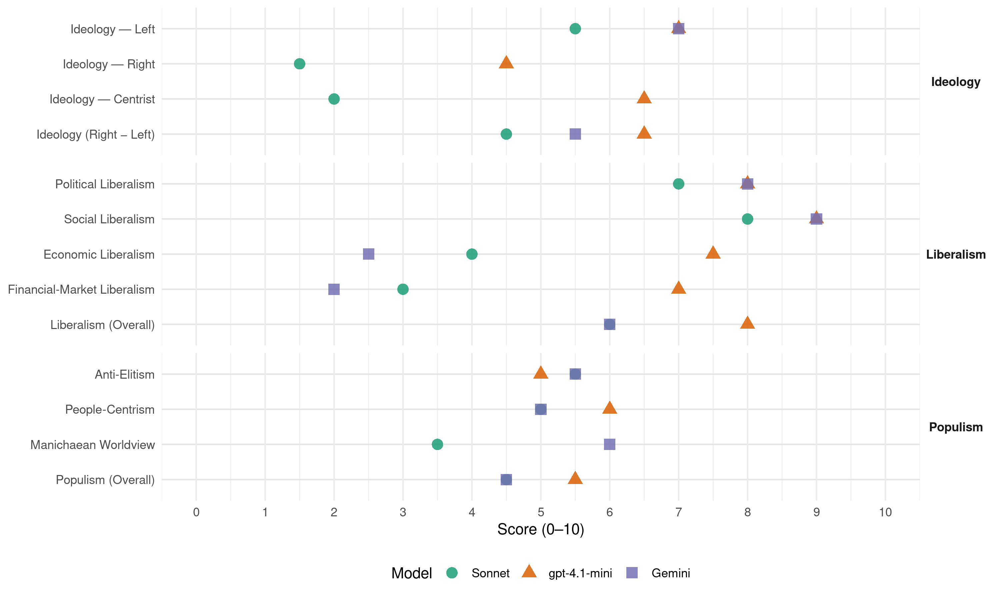

Greens (New Zealand, 1999)
manifesto_id 64110_199911
Get full text: This site shows derived annotations and short verbatim quotes only. The full manifesto text is © Manifesto Project / WZB — obtain it via manifesto-project.wzb.eu using the manifesto_id above.
Headline scores
| Dimension | Sonnet | gpt-4.1-mini | Gemini |
|---|---|---|---|
| Populism (Overall) | 4.5 | 5.5 | 4.5 |
| Anti-Elitism | 5.5 | 5.0 | 5.5 |
| People-Centrism | 5.0 | 6.0 | 5.0 |
| Manichaean Worldview | 3.5 | – | 6.0 |
| Ideology (Right − Left) | 4.5 | 6.5 | 5.5 |
| Liberalism (Overall) | 6.0 | 8.0 | 6.0 |
| Political Liberalism | 7.0 | 8.0 | 8.0 |
| Social Liberalism | 8.0 | 9.0 | 9.0 |
| Economic Liberalism | 4.0 | 7.5 | 2.5 |
| Financial-Market Liberalism | 3.0 | 7.0 | 2.0 |
Evidence per dimension
Economic Liberalism
Gemini · score 2.0 · verified · chunk 1
“unilateral removal of tariffs have had very little”
New Zealand’s membership of the WTO and our unilateral removal of tariffs have had very little tangible benefit to farmers
Gemini · score 3.0 · verified · chunk 2
“Set a levy on all toxic”
Set a levy on all toxic and hazardous substances, the levy to be calculated
gpt-4.1-mini · score 8.0 · verified · chunk 1
“We need to tax work and enterprise less and pollution and waste more than we do at present”
We need to tax work and enterprise less and pollution and waste more than we do at present. The Green Party seeks to shift some of the burden of taxation away from work and enterprise and on to resources. The shift to a Carbon tax and other specific consumption and resource taxes (eg on toxic chemicals and waste generation) will encourage sustainable economic activity and employment.
gpt-4.1-mini · score 7.0 · verified · chunk 2
“NZ’s organic exports stand at $25 million a year and are expected to rise to $65m within two years”
NZ’s organic exports stand at $25 million a year and are expected to rise to $65m within two years. Market barriers that exist for conventional produce melt away for certified organic food.
Sonnet · score 4.0 · verified · chunk 1
“tax work and enterprise less and pollution”
We need to tax work and enterprise less and pollution and waste more than we do at present.
Sonnet · score 4.0 · verified · chunk 2
“innovation and entrepreneurial spirit of the tourism industry”
The innovation and entrepreneurial spirit of the tourism industry has often been an example of local economic development at its best.
Financial-Market Liberalism
Gemini · score 2.0 · verified · chunk 1
“virtually all trading banks are now foreign-owned”
run-down of health services in particular is a bitter pill for many rural communities. At the same time, virtually all trading banks are now foreign-owned
gpt-4.1-mini · score 7.0 · verified · chunk 1
“Virtually all trading banks are now foreign-owned and the profit that they expatriate each year”
At the same time, virtually all trading banks are now foreign-owned and the profit that they expatriate each year would be sufficient to provide a free national health service. Roading services are also being considered for corporatisation in a move with potentially disastrous consequences for both rural and urban communities.
Sonnet · score 3.0 · verified · chunk 1
“virtually all trading banks are now foreign-owned”
At the same time, virtually all trading banks are now foreign-owned and the profit that they expatriate each year would be sufficient to provide a free national health service.
Political Liberalism
Gemini · score 8.0 · verified · chunk 1
“cornerstone of an effective participatory democracy”
Access to official information is a cornerstone of an effective participatory democracy. Good information is also essential to ensuring
Gemini · score 8.0 · verified · chunk 2
“essential for a healthy democratic society”
The Green Party believes it is essential for a healthy democratic society to have a truly independent watchdog
gpt-4.1-mini · score 8.0 · verified · chunk 1
“Access to official information is a cornerstone of an effective participatory democracy”
Access to official information is a cornerstone of an effective participatory democracy. Good information is also essential to ensuring fair and open dealings between government and its citizens. The Green Party is committed to improving the quality of public information and making public information more easily accessible.
gpt-4.1-mini · score 8.0 · verified · chunk 2
“The Green Party believes that parliament is the rightful place to scrutinise the intelligence and security activities of the government”
The Green Party believes that parliament is the rightful place to scrutinise the intelligence and security activities of the government. We will therefore abolish the Intelligence and Security Committee Act.
Sonnet · score 7.0 · verified · chunk 1
“cornerstone of an effective participatory democracy”
Access to official information is a cornerstone of an effective participatory democracy. Good information is also essential to ensuring fair and open dealings between government and its citizens.
Sonnet · score 7.0 · verified · chunk 2
“parliament is the rightful place to scrutinise”
The Green Party believes that parliament is the rightful place to scrutinise the intelligence and security activities of the government. We will therefore abolish the Intelligence and Security Committee Act.
Liberalism (Overall)
Gemini · score 5.0 · verified · chunk 1
“cornerstone of an effective participatory democracy”
Access to official information is a cornerstone of an effective participatory democracy. Good information is also essential to ensuring
Gemini · score 7.0 · verified · chunk 2
“comply fully with the Human Rights Act”
We support making the government comply fully with the Human Rights Act 1993. We support workplace programmes
gpt-4.1-mini · score 8.0 · verified · chunk 1
“Access to official information is a cornerstone of an effective participatory democracy”
Access to official information is a cornerstone of an effective participatory democracy. Good information is also essential to ensuring fair and open dealings between government and its citizens. The Green Party is committed to improving the quality of public information and making public information more easily accessible.
gpt-4.1-mini · score 8.0 · verified · chunk 2
“The Green Party believes that parliament is the rightful place to scrutinise the intelligence and security activities of the government”
The Green Party believes that parliament is the rightful place to scrutinise the intelligence and security activities of the government. We will therefore abolish the Intelligence and Security Committee Act.
Sonnet · score 5.0 · verified · chunk 1
“cornerstone of an effective participatory democracy”
Access to official information is a cornerstone of an effective participatory democracy. Good information is also essential to ensuring fair and open dealings between government and its citizens.
Sonnet · score 7.0 · verified · chunk 2
“elimination of institutional discrimination”
The Green Party supports: celebration of diversity and encouragement of appreciation between groups; elimination of legislative barriers to full participation in society; elimination of institutional discrimination
Anti-Elitism
Gemini · score 7.0 · verified · chunk 1
“promoted as safe by their vested interest producers”
like thalidomide, DDT and nuclear power stations - promoted as safe by their vested interest producers, but catastrophic in their downstream effects
Gemini · score 4.0 · verified · chunk 2
“convenient and profitable to multinational agribusiness”
redesign our food in ways that are convenient and profitable to multinational agribusiness but dangerous for consumers
gpt-4.1-mini · score 7.0 · verified · chunk 1
“Foreign speculators, having bought up virtually all of our state assets”
Foreign speculators, having bought up virtually all of our state assets (railways, telecommunications, airlines, etc) then turned their attention to local authority assets (such as water and roads), now appear to be targeting traditional family farms and profitable Producer Boards as potential corporate cash-cows.
gpt-4.1-mini · score 3.0 · verified · chunk 2
“technology is being used to redesign our food in ways that are convenient and profitable to multinational agribusiness”
But instead technology is being used to redesign our food in ways that are convenient and profitable to multinational agribusiness but dangerous for consumers, who are mostly denied the right to know.
Sonnet · score 6.0 · verified · chunk 1
“multinational corporations trying to ‘muscle in’”
The present push for de-regulation of the Boards is perceived by the Green Party as multinational corporations trying to ‘muscle in’ on one of the few profitable areas left for farmers.
Sonnet · score 5.0 · verified · chunk 2
“technology is being used to redesign our food in ways that are convenient and profitable to multinational agribusiness”
Humanity has the power now to ensure every person has enough to eat… But instead technology is being used to redesign our food in ways that are convenient and profitable to multinational agribusiness but dangerous for consumers
Ideology — Centrist
gpt-4.1-mini · score 7.0 · verified · chunk 1
“The Green philosophy of promoting strong local communities means that people will want to live in rural communities”
The Green philosophy of promoting strong local communities means that people will want to live in rural communities rather than drifting away. Stable populations mean that rural communities will be better able to control services such as schools, hospitals, fire services, etc.
gpt-4.1-mini · score 6.0 · verified · chunk 2
“We recognise that the Green Party will have to work with whatever other parties we are sharing government with”
We recognise that the Green Party will have to work with whatever other parties we are sharing government with. The policies below are those we will advocate for in any post-election agreement.
Sonnet · score 2.0 · verified · chunk 1
“needs of people and communities”
Trade policy must reflect the needs of people and communities — a generic people-centred appeal without strong programmatic specificity.
Sonnet · score 2.0 · verified · chunk 2
“We recognise we will be a small player”
We recognise we will be a small player in the next parliament, but our support for any other party will be conditional on some progress towards these policies.
Ideology — Left
Gemini · score 8.0 · verified · chunk 1
“corporatization and/or privatization of services”
schools, hospitals, fire services, etc. Corporatization and/or privatization of services such as banking, postal services and telecommunications
Gemini · score 6.0 · verified · chunk 2
“profitable to multinational agribusiness but dangerous”
redesign our food in ways that are convenient and profitable to multinational agribusiness but dangerous for consumers
gpt-4.1-mini · score 7.0 · verified · chunk 1
“The Green Party supports a comprehensive approach to animal welfare”
The Green Party supports a comprehensive approach to animal welfare. Livestock must be provided with adequate food, water and shelter at all times, physical mutilation for castration, tail docking, ear marking, etc, should be minimised and transportation kept as low stress for the animal as possible.
gpt-4.1-mini · score 7.0 · verified · chunk 2
“poverty amid wealth - and the inadequate housing and hygiene which results”
Part of the answer is poverty amid wealth - and the inadequate housing and hygiene which results. But there is growing evidence of the link between diet and health, and increasing numbers of people who are allergic to food, sensitive to chemicals, have damaged immune systems or suffer from chronic, diet-related diseases.
Sonnet · score 6.0 · verified · chunk 1
“opposes foreign control of land in New Zealand”
The Green Party * supports development finance for ecologically sustainable development * opposes foreign control of land in New Zealand * supports localisation and local control of agricultural production
Sonnet · score 5.0 · verified · chunk 2
“profitable to multinational agribusiness but dangerous for consumers”
technology is being used to redesign our food in ways that are convenient and profitable to multinational agribusiness but dangerous for consumers, who are mostly denied the right to know
Ideology (Right − Left)
Gemini · score 7.0 · verified · chunk 1
“corporatization and/or privatization of services”
schools, hospitals, fire services, etc. Corporatization and/or privatization of services such as banking, postal services and telecommunications
Gemini · score 4.0 · verified · chunk 2
“profitable to multinational agribusiness but dangerous”
redesign our food in ways that are convenient and profitable to multinational agribusiness but dangerous for consumers
gpt-4.1-mini · score 7.0 · verified · chunk 1
“The Green Party supports a comprehensive approach to animal welfare”
The Green Party supports a comprehensive approach to animal welfare. Livestock must be provided with adequate food, water and shelter at all times, physical mutilation for castration, tail docking, ear marking, etc, should be minimised and transportation kept as low stress for the animal as possible.
gpt-4.1-mini · score 6.0 · verified · chunk 2
“Citizens have a fundamental right to know what is in their food”
Food policy is also about democracy. Citizens have a fundamental right to know what is in their food, and to participate in decisions about what will be allowed.
Sonnet · score 5.0 · verified · chunk 1
“anti-corporate elite, redistribution, social equality”
The manifesto consistently frames multinationals and corporate elites as threats to farmers, communities and the environment, reflecting a left-populist ideological orientation.
Sonnet · score 4.0 · verified · chunk 2
“anti-corporate elite, redistribution”
technology is being used to redesign our food in ways that are convenient and profitable to multinational agribusiness but dangerous for consumers, who are mostly denied the right to know
Ideology — Right
gpt-4.1-mini · score 6.0 · verified · chunk 1
“The Green Party will not allow the sale of land to persons who are not NZ citizens or permanent residents”
The Green Party will not allow the sale of land to persons who are not NZ citizens or permanent residents. Foreign companies must satisfy the criteria of the Overseas Investment Commission, with an absolute prohibition on companies with more than 49% overseas ownership buying NZ land.
gpt-4.1-mini · score 3.0 · verified · chunk 2
“New Zealand to declare itself (and market itself internationally as) a nation free of genetically modified foods”
By 2000, New Zealand to declare itself (and market itself internationally as) a nation free of genetically modified foods. GM food is defined here as food produced by inserting genetic material from one organism into an organism from another, unrelated species with which it could not breed naturally.
Sonnet · score 2.0 · verified · chunk 1
“not allow the sale of land to persons who are not NZ citizens”
The Green Party will not allow the sale of land to persons who are not NZ citizens or permanent residents.
Sonnet · score 1.0 · verified · chunk 2
“New Zealand to declare itself a nation free of genetically modified foods”
By 2000, New Zealand to declare itself (and market itself internationally as) a nation free of genetically modified foods.
Manichaean Worldview
Gemini · score 6.0 · verified · chunk 1
“multinational corporations who are desperately pushing”
The only people to profit from GE foods are the multinational corporations who are desperately pushing to have them - unlabelled - on our supermarket
gpt-4.1-mini · score 5.0 · mixed · chunk 1
“The motivation of these corporations does not reflect the best interests of the farmer or of the community as a whole”
The Greens recognize the pressure being applied to NZ farmers by multi-national corporations wanting them to be “at the forefront of bio-technology”. The motivation of these corporations does not reflect the best interests of the farmer or of the community as a whole. There is absolutely no consumer demand for GE foods - in fact, people will only buy GE food if they don’t know what they are buying.
gpt-4.1-mini · score 5.0 · mixed · chunk 2
“The production of pesticide-resistant insect pests, creation of new plant and animal viruses and the gradual pollution of the gene pool”
The production of pesticide-resistant insect pests, creation of new plant and animal viruses and the gradual pollution of the gene pool with unnatural genetic material will eventually make it impossible for any NZ production to comply with internationally recognised organic standards.
Sonnet · score 4.0 · verified · chunk 1
“vested interest producers, but catastrophic in their downstream effects”
promoted as safe by their vested interest producers, but catastrophic in their downstream effects on our children and their children.
Sonnet · score 3.0 · verified · chunk 2
“dangerous for consumers, who are mostly denied the right to know”
technology is being used to redesign our food in ways that are convenient and profitable to multinational agribusiness but dangerous for consumers, who are mostly denied the right to know
People-Centrism
Gemini · score 5.0 · verified · chunk 1
“reflect the needs of people and communities”
to make it work. * Trade policy must reflect the needs of people and communities. * Effective Biosecurity management is an environmental
Gemini · score 5.0 · verified · chunk 2
“Citizens have a fundamental right to know”
Food policy is also about democracy. Citizens have a fundamental right to know what is in their food
gpt-4.1-mini · score 6.0 · verified · chunk 1
“The Green philosophy of promoting strong local communities means that people will want to live in rural communities”
The Green philosophy of promoting strong local communities means that people will want to live in rural communities rather than drifting away. Stable populations mean that rural communities will be better able to control services such as schools, hospitals, fire services, etc.
gpt-4.1-mini · score 6.0 · verified · chunk 2
“Citizens have a fundamental right to know what is in their food”
Food policy is also about democracy. Citizens have a fundamental right to know what is in their food, and to participate in decisions about what will be allowed.
Sonnet · score 5.0 · verified · chunk 1
“Trade policy must reflect the needs of people and communities”
8. TRADE POLICY MUST REFLECT THE NEEDS OF PEOPLE AND COMMUNITIES Despite the total value of exports increasing, the value of imports has risen at a faster rate.
Sonnet · score 5.0 · verified · chunk 2
“Citizens have a fundamental right to know what is in their food”
Food policy is also about democracy. Citizens have a fundamental right to know what is in their food, and to participate in decisions about what will be allowed.
Populism (Overall)
Gemini · score 6.0 · verified · chunk 1
“multinational corporations trying to”muscle in”“
de-regulation of the Boards is perceived by the Green Party as multi-national corporations trying to “muscle in” on one of the few profitable areas
Gemini · score 3.0 · verified · chunk 2
“Citizens have a fundamental right to know”
Food policy is also about democracy. Citizens have a fundamental right to know what is in their food
gpt-4.1-mini · score 6.0 · verified · chunk 1
“Foreign speculators, having bought up virtually all of our state assets”
Foreign speculators, having bought up virtually all of our state assets (railways, telecommunications, airlines, etc) then turned their attention to local authority assets (such as water and roads), now appear to be targeting traditional family farms and profitable Producer Boards as potential corporate cash-cows.
gpt-4.1-mini · score 5.0 · verified · chunk 2
“Citizens have a fundamental right to know what is in their food”
Food policy is also about democracy. Citizens have a fundamental right to know what is in their food, and to participate in decisions about what will be allowed.
Sonnet · score 5.0 · verified · chunk 1
“multinational corporations trying to ‘muscle in’”
The present push for de-regulation of the Boards is perceived by the Green Party as multinational corporations trying to ‘muscle in’ on one of the few profitable areas left for farmers.
Sonnet · score 4.0 · verified · chunk 2
“who controls the food we eat and the water we drink”
As we enter the new millennium the question of who controls the food we eat and the water we drink will be at the top of the political agenda.
Social Liberalism